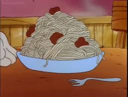

Speghetti

This is a simple recipe to make an unnamed famous orange cat's favorite speghetti with meat sauce.
Ingredients
- 1 16oz Barilla Spaghetti
- 1 45oz Prego Pasta Sauce with Meat Flavor
Steps
- Prepare 16oz Barilla Spaghetti according to instructions
- Strain the spaghetti & set aside
- Stir 45oz Prego Pasta Sauce with Meat Flavor on medium heat for 15 minutes
- Add cooked spaghetti to pasta sauce, stir, & share!